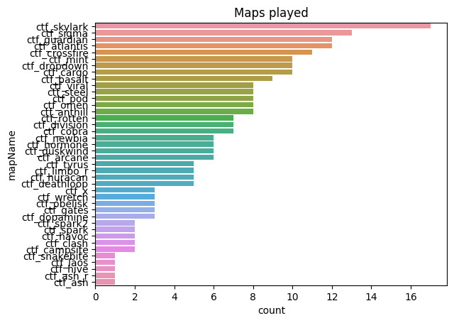
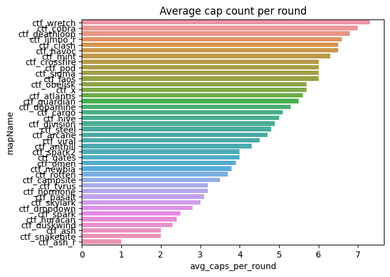
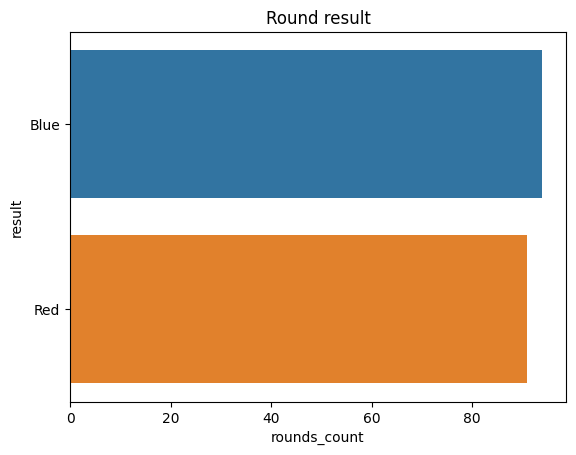
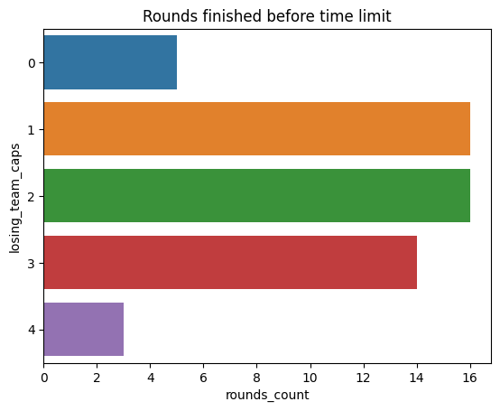
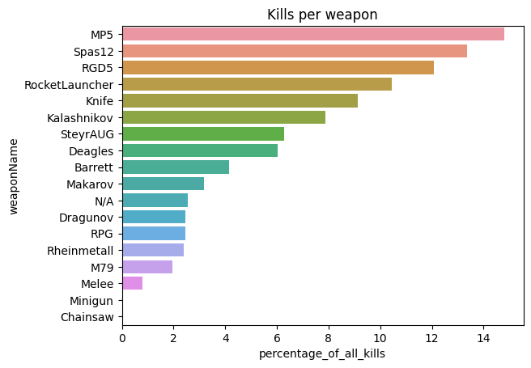

Ranked games
| first_game_start_time | last_game_start_time | games_count | |
|---|---|---|---|
| 0 | 2022-11-20 17:43:48 | 2023-01-18 20:01:02 | 690 |
Maps played

| mapName | count | |
|---|---|---|
| 0 | ctf_rotten | 221 |
| 1 | ctf_guardian | 207 |
| 2 | ctf_wretch | 143 |
| 3 | ctf_cobra | 138 |
| 4 | ctf_steel | 107 |
| 5 | ctf_division | 107 |
| 6 | ctf_x | 99 |
| 7 | ctf_crossfire | 98 |
| 8 | ctf_tyrus | 93 |
| 9 | ctf_campsite | 75 |
| 10 | ctf_newbia | 56 |
| 11 | ctf_dopamine | 53 |
| 12 | ctf_dogbite | 49 |
| 13 | ctf_Spark | 43 |
| 14 | ctf_snakebite | 36 |
| 15 | ctf_ash | 33 |
| 16 | ctf_atlantis | 32 |
| 17 | ctf_hormone | 30 |
| 18 | ctf_basalt | 26 |
| 19 | ctf_dusk | 25 |
| 20 | ctf_limbo | 23 |
| 21 | ctf_voland | 22 |
| 22 | ctf_huracan | 21 |
| 23 | ctf_lanubya | 12 |
| 24 | ctf_hive | 12 |
| 25 | ctf_seawell | 9 |
| 26 | dm_arena | 1 |
Average cap count per round

| mapName | avg_caps_per_round | |
|---|---|---|
| 0 | ctf_crossfire | 6.6 |
| 1 | ctf_guardian | 6.6 |
| 2 | ctf_limbo | 6.3 |
| 3 | ctf_wretch | 6.2 |
| 4 | ctf_cobra | 6.2 |
| 5 | ctf_atlantis | 6.1 |
| 6 | ctf_rotten | 5.5 |
| 7 | ctf_dopamine | 5.1 |
| 8 | ctf_voland | 5.1 |
| 9 | ctf_campsite | 5.0 |
| 10 | dm_arena | 5.0 |
| 11 | ctf_dogbite | 4.7 |
| 12 | ctf_division | 4.6 |
| 13 | ctf_hive | 4.3 |
| 14 | ctf_Spark | 4.2 |
| 15 | ctf_steel | 4.1 |
| 16 | ctf_ash | 3.9 |
| 17 | ctf_x | 3.8 |
| 18 | ctf_newbia | 3.8 |
| 19 | ctf_snakebite | 3.4 |
| 20 | ctf_basalt | 3.3 |
| 21 | ctf_huracan | 3.3 |
| 22 | ctf_tyrus | 3.2 |
| 23 | ctf_hormone | 3.2 |
| 24 | ctf_lanubya | 3.1 |
| 25 | ctf_seawell | 1.7 |
| 26 | ctf_dusk | 1.6 |
Average rounds per game

| all_games | games_played | rounds_played | avg_rounds_per_game | |
|---|---|---|---|---|
| 0 | all_games | 685 | 1771 | 2.6 |
Winning team

Rounds finished before time limit

| losing_team_caps | rounds_count | seconds_left_avg | |
|---|---|---|---|
| 0 | 0 | 90 | 70.4 |
| 1 | 1 | 106 | 54.7 |
| 2 | 2 | 137 | 104.5 |
| 3 | 3 | 89 | 13.5 |
| 4 | 4 | 67 | 105.9 |
Kills per weapon

| weaponName | percentage_of_all_kills | |
|---|---|---|
| 0 | RGD5 | 15.03 |
| 1 | Kalashnikov | 12.48 |
| 2 | MP5 | 11.52 |
| 3 | Knife | 10.63 |
| 4 | Spas12 | 10.28 |
| 5 | Rheinmetall | 7.37 |
| 6 | SteyrAUG | 6.87 |
| 7 | Deagles | 6.26 |
| 8 | M79 | 5.01 |
| 9 | RPG | 4.76 |
| 10 | Barrett | 3.28 |
| 11 | N/A | 1.78 |
| 12 | Minigun | 1.11 |
| 13 | RocketLauncher | 0.97 |
| 14 | Melee | 0.92 |
| 15 | Chainsaw | 0.78 |
| 16 | Dragunov | 0.71 |
| 17 | Makarov | 0.23 |